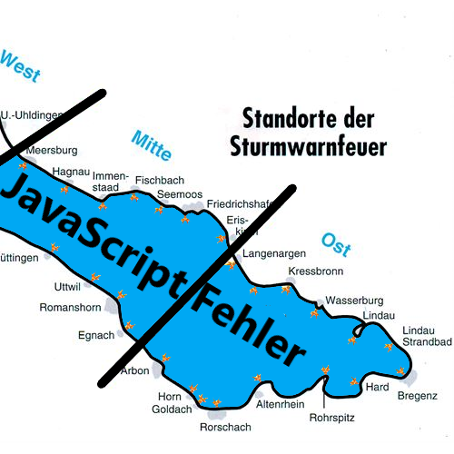

Warnwetter für den Bodensee
im Bereich BODENSEE-West:
Warnleuchten blinken mit
im Bereich BODENSEE-Mitte:
Warnleuchten blinken mit
im Bereich BODENSEE-Ost:
Warnleuchten blinken mit

klick picture for data update